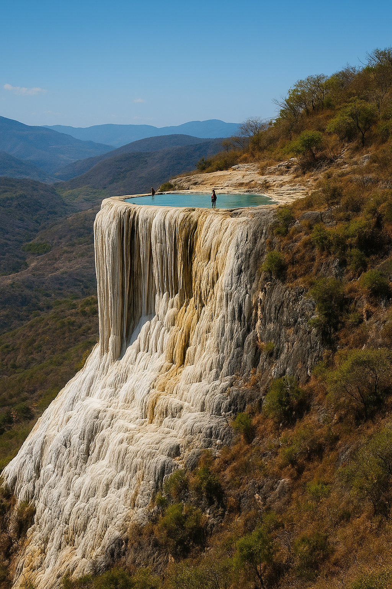

Hierve el Agua
Un paraíso natural famoso por sus cascadas patrificadas y aguas minerales. Es uno de los destinos más impresionantes de Oaxaca
Mitla
Zona arqueológica mixteca conocida por sus mosaicos de piedra. Un lugar lleno de historia y tradición.

Centro Histórico
Declarado Patrimonia de la Humanidad de la UNESCO, el centro histórico de la Oaxaca está llena de calles empedradas, iglesias coloniales y mercados vibrantes.